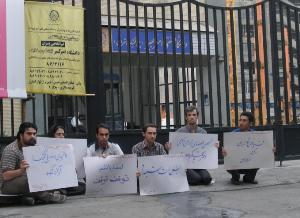

ادوارنیوز: نیروهای انتظامی و لباس شخصی صبح امروز (18تیرماه) با حمله به تحصن اعضای شورای دفتر تحکیم وحدت در برابر درب ولی عصر
دانشگاه پلی تکنیک این دانشجویان را بازداشت کردند.
به گزارش خبرنگار ادوارنیوز اعضای شورای مرکزی دفتر تحکیم وحدت که از ساعت 6 صبح امروز در پاسداشت 18 تیرماه و در اعتراض به ادامه بازداشت 8 دانشجوی دانشگاه پلی تکنیک در برابر دانشگاه پلی تکنیک متحصن بودند مقارن ساعت 7:30 دقیقه با حمله نیروهای انتظامی و لباس شخصی بازداشت و به نقطه نامعلومی منتقل شده اند. گزارش شاهدان عینی از درگیری دانشجویان پیش از بازداشت با پلیس حکایت دارد.
محمد هاشمی، علی نیکونسبتی، مهدی عربشاهی، بهاره هدایت، حنیف یزدانی و علی وفقی اعضای بازداشت شده شورای مرکزی تحکیم هستند.
شورای مرکزی دفتر تحکیم وحدت با انتشار بیانیه زیر از صبح امروز در برابر دانشگاه پلی تکنیک متحصن شده بودند. در بیانیه این اتحادیه دانشجویی آمده است:
به نام خدا
برخاسته ایم تا بانگ بیدارباش سردهیم
بیانیه اعلام تحصن شورای مرکزی دفتر تحکیم وحدت در پاسداشت 18 تیر
در دوران نشست و سکوتِ جامعه ایرانی، و در زمانِ انفعال و سردرگمی روشنفکر و سیاستمدار مدعی، و آن هنگام که صدای کوسِ استبداد بر آستانِ بلندِ میهنمان سرآساییده و چتر حیاتش بر اول و آخر ایرانمان گسترده است، و در کویی که نجوای شهادتِ شاهدِ شریفِ شرفِ نسلمان شهید عزت ابراهیم نژاد به گوش می رسد، و در روزگاری که عزت و اقتدار میهنمان برپای ذلت و ناتوانی حاکمانمان بر آب رفته است؛ برخاسته ایم تا بانگ بیدارباش سردهیم و جامعه ی ایرانی و روشنفکران و سیاستمداران و شاهدان شریفِ شرفِ نسلمان و آستانِ بلندِ تاریخِ میهنمان و عزت و اقتدارمان را بازخوانیم.
هرچند دنیای دانشگاه و حدیث رفته بر آن در چند صباح گذشته از این، و در این کنونِ پر سئوالِ بی جواب، به رنگِ سیاه ظلم و ستم آغشته است. ما که خاطر از دشنه ی سبزوار داریم و یادمان با زندان و تعلیق و تعطیل و ستاره رنگین است؛ در انتظار آزادی دوستان دربندمان ننشسته ایم؛ که ایستاده و استوار چون آنان برای رهایی شان رها از خویش گشته ایم.
شورای مرکزی دفتر تحکیم وحدت در شرایطی اقدام به تحصن در راستای استیفای حقوقی از دست رفته می کند که انفعال و مصلحت سنجی پاره ای از روشنفکران و سیاستمداران بر جای حقیقت گرائی و حق محوری نشسته است. در نتیجه غبار یأس و ناامیدی دامن جامعه را آلوده است. ما فریاد نسلی هستیم تاوان پرداز نخواسته ها و نکرده ها. مگرنه اینکه نسل ما نسل بی انتخاب است؟ نسلی که پرسشهایش بی پاسخ و کنشش واکنش تعبیر می شود. رسالت روشنفکر دمیدن در شیپور آگاهی است. آگاهی از رهگذر شنیدنِ پاسخِ پرسش حاصل می شود حال آنکه روشنفکران زمانه ی ما را یارای برآمدن از پس پرسشهای ما نیست.
نگاه به قدرت به مثابه ابزار سلطه بر مردمانی که در شناسائی و خواست حقوق شهروندی خویش درمانده اند مشخصه ی کنش سیاستمداران و حاکمانی است که در پس نقاب عدالت و آزادی و دینداری دروغینشان پنهان شده اند، و در این میان نسل ماست که مسرور از نقاب برافکندن از چهره ی دروغین مدعیان، منادی عدالت و آزادی است. دانشگاه زنده است پس نسل ما زنده است، و فریاد آزادی و عدالت و دموکراسی و حقوق بشر از کنه وجود آن سربرمی آورد.
امروز هیجدهم تیرماه ، هشت سال پس از تیرماه جاودان یکهزار و سیصد و هفتاد و هشت ـ روز تبلور روح اعتراض دانشگاه بر استبدادزائی و استبدادخوئی ـ بود. پس امروز که کوله بار پرسشمان از علل استبداد رفته بر وجودمان، پاسخی از صدائی نمی شنود به بست سرور حیات منحصر به فرد خویش نشسته ایم تا به مردمان و نسلمان و روشنفکران و اساتیدمان و سیاستمداران و حاکمانمان، بود وجود پرسشهایمان را در این زمانه ی سراسر نیاز که کویر تشنه ی عطشناک جستجوگر ذهنمان لطافت بارش بارانی را احساس نمی کند، یادآور شویم. از این رو بدانید که هم اینک به بست غم ننشسته ایم. که آرمانهایمان بساط بستمان است.
شورای مرکزی دفتر تحکیم وحدت
18 تیرماه 1386